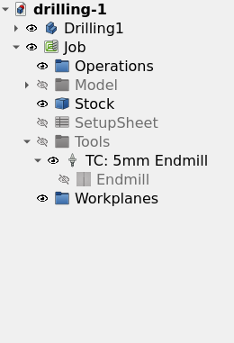

Tools
Overview
The CAM workbench describes the item that cuts with four objects. A Tool Shape is a template. A Tool Bit is one item with its dimensions. A Tool Library is a numbered list of Tool Bits. A Tool Controller (TC) connects one Tool Bit to the feeds and the Spindle Speed of a Job.
The CAM workbench stores each Tool Shape, each Tool Bit and each Tool Library as a file in the asset directory. A TC is an object in the document of the Job. This page gives the relation between these objects and links to each page of the section.
Relation between the objects
-
Tool Shape: a FreeCAD document (
.fcstd) that gives the physical shape and the parameter names of a Tool Bit. Many Tool Bits can use one Tool Shape. For example, all Tool Bits of theEndmilltype use the same Tool Shape file. See Tool Shape. -
Tool Bit: a JSON file (
.fctb) that names one Tool Shape and holds the parameter values and the attributes. The file name is the ID of the Tool Bit. See Tool Bit. -
Tool Library: a JSON file (
.fctl) that gives a number to each Tool Bit ID. A Tool Library is independent of a Job. One Tool Bit can be a member of more than one Tool Library. See Tool Library. -
Tool Controller: an object in the Tools group of a Job. A TC connects one Tool Bit to a Tool Number, a Spindle Speed, a spindle direction, the feeds and the rates of the rapid moves. See Tool Controller.
An Operation refers to a TC. An Operation does not refer to a Tool Bit directly. The Operation reads the Tool Bit of its TC to calculate the Toolpath.
When you add a Tool Bit to a Job, the CAM workbench puts a copy of the Tool Bit into the document. The TC owns this Tool Bit object. The Tool Bit object keeps the ID of the library Tool Bit. A change of the library Tool Bit does not change the Tool Bit object in the Job. See Update from the Tool Library.
The figure shows the tree view of a Job with one TC in the Tools group and the Tool Bit object below the TC.

More than one TC of a Job can use the same Tool Bit with different feeds and speeds. The number of a Tool Bit in a Tool Library is only the proposal for the Tool Number of a new TC. See Tool numbers.
Commands
Two commands of the CAM menu give access to each Tool Bit and each Tool Library:
-
 Add Toolbit…, : opens the Toolbit Selector dialog. The dialog adds the selected Tool Bits to a Job as TCs.
Add Toolbit…, : opens the Toolbit Selector dialog. The dialog adds the selected Tool Bits to a Job as TCs. -
Toolbit Library Manager, : opens the Library Manager dialog. The dialog creates, changes, imports and exports Tool Bits and Tool Libraries.
Work sequence
The usual sequence from a new Tool Bit to an Operation is:
-
Select .
-
Select the Tool Library for the new Tool Bit, or select All Toolbits.
-
Press Adds a toolbit. The Toolbit Shape Selection dialog lists the supplied Tool Shapes and your own Tool Shapes.
-
Select a Tool Shape. The Toolbit Parameter Editor dialog opens.
-
Enter the values of the Tool Bit and press OK. See Tool Bit.
-
Close the Library Manager dialog.
-
Select .
-
Select the Tool Bit and press Add to Job. The CAM workbench creates a TC in the Job.
-
Select the TC in the task panel of an Operation.
Toolbit Library Manager and Add Toolbit… describe the controls of the two dialogs.
Asset directory
introduced in 1.1: The CAM workbench stores your Tool Bits, Tool Libraries and Tool Shapes in the CAM asset directory.
The default asset directory is CamAssets in the application data directory of FreeCAD.
sets the location of the asset directory.
See CAM Preferences.
The asset directory contains these folders:
-
Tools/Bit: the Tool Bit files. -
Tools/Library: the Tool Library files. -
Tools/Shape: your own Tool Shapes. -
Machines: the Machine Templates (.fcm). adds and changes the Machine Templates. See Machine. -
Templates: the Job Templates.
FreeCAD supplies a set of Tool Bits, Tool Libraries and Tool Shapes in the folders Bit, Library and Shape of the installation directory.
The location of these folders is usually:
-
Linux:
/usr/lib64/FreeCAD/Mod/CAM/Tools -
Windows:
C:\Program Files\FreeCAD\Mod\CAM\Tools -
macOS:
/Applications/FreeCAD.app/Contents/Resources/Mod/CAM/Tools
The CAM workbench copies the supplied Tool Bits and the Default Tool Library into the asset directory.
See Tool Library.
When the asset directory does not contain a Tool Shape, the CAM workbench uses the supplied Tool Shape in the installation directory.
The Library Manager dialog writes each change to the asset directory immediately. The Library Manager dialog has no separate save step.
introduced in 1.1: When you activate the CAM workbench, the CAM workbench looks for a custom tool directory of an earlier version. If the CAM workbench finds this directory, the CAM Asset Migration dialog opens. The CAM Asset Migration dialog offers to copy each Tool Bit, each Tool Library and each Tool Shape into the asset directory.
When you open a document, the CAM workbench converts the Tool Bit property names ShapeName and BitShape to the current names.
The CAM workbench does not load a Job Template that uses the tool table of the versions before 0.19.
Update from the Tool Library
introduced in 26.3: The CAM workbench compares the Tool Bits of a Job with the Tool Bits in the library. The CAM workbench finds the library Tool Bit by the ID that the Tool Bit object of the Job keeps. The comparison starts in two conditions:
-
You open a document. The checkbox Check for tool updates from the library when opening a document in sets or stops this comparison.
-
You select Update Tools from Library in the context menu of the Job.
When a Tool Bit of a Job is different from the library Tool Bit, the Tool Updates Available dialog opens. Update replaces each selected Tool Bit of the Job with the current library Tool Bit and recomputes the document. Cancel changes nothing.
Tool Bit describes the comparison and the Tool Updates Available dialog. Tool Controller describes the effect of the update on the TC.
Feeds and Speeds
introduced in 26.3: A Tool Bit can store Presets. A Preset holds a surface speed and a chipload for one material and one type of cut. The Feeds and Speeds helper of the Tool Controller editor suggests the Spindle Speed and the feeds of a TC. The helper uses the Presets, the material of the Stock and the spindle limits of the Machine. See Feeds and Speeds.